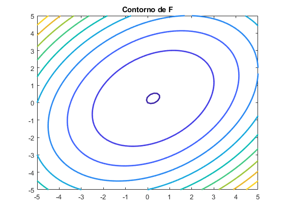
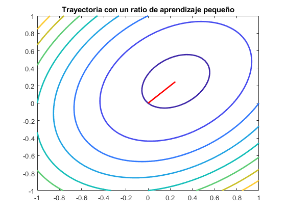
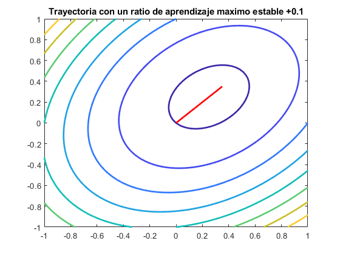

clc; close all; clear; figure syms x1 x2 x=[x1;x2]; x_t=[x1 x2]; A=[6 -2;-2 6]; F=(1/2)*x_t*A*x+[-1 -1]*x;
%i fcontour(F,'LineWidth',2) title('Contorno de F')
ii
d_F=[diff(F,x1);diff(F,x2)]; X(1,1)=0; X(1,2)=0; for i=1:100 eval=[X(i,1);X(i,2)]; g=[subs(d_F(1),[x1,x2],eval');subs(d_F(2),[x1,x2],eval')]; alpha=0.01; prov=eval-(alpha*g); X(i+1,1)=prov(1,1); X(i+1,2)=prov(2,1); end figure fcontour(F,[-1 1],'LineWidth',2) hold on plot(X(:,1),X(:,2),'LineWidth',2,'Color','r') title('Trayectoria con un ratio de aprendizaje pequeño')
iii
X2(1,1)=0; X2(1,2)=0; alpha=0.1; for i=1:2 eval=[X2(i,1);X2(i,2)]; g=[subs(d_F(1),[x1,x2],eval');subs(d_F(2),[x1,x2],eval')]; prov=eval-(alpha*g); X2(i+1,1)=prov(1,1); X2(i+1,2)=prov(2,1); end disp('Valores de X con 2 iteraciones del algoritmo') disp(X2)
Valores de X con 2 iteraciones del algoritmo
0 0
0.1000 0.1000
0.1600 0.1600
iv,v
lambda=eig(A); max_lamda=max(lambda); alpha_max=2/max_lamda; disp('Valor maximo de ratio de aprendizaje') disp(alpha_max) disp('El ratio de aprendizaje maximo no depende de la posicion inicial del algoritmo') X3(1,1)=0; X3(1,2)=0; alpha=alpha_max; for i=1:20 eval=[X3(i,1);X3(i,2)]; g=[subs(d_F(1),[x1,x2],eval');subs(d_F(2),[x1,x2],eval')]; prov=eval-(alpha*g); X3(i+1,1)=prov(1,1); X3(i+1,2)=prov(2,1); end figure fcontour(F,[-1 1],'LineWidth',2) hold on plot(X3(:,1),X3(:,2),'LineWidth',2,'Color','r') title('Trayectoria con un ratio de aprendizaje maximo estable') X4(1,1)=0; X4(1,2)=0; alpha=alpha_max+0.1; for i=1:20 eval=[X4(i,1);X4(i,2)]; g=[subs(d_F(1),[x1,x2],eval');subs(d_F(2),[x1,x2],eval')]; prov=eval-(alpha*g); X4(i+1,1)=prov(1,1); X4(i+1,2)=prov(2,1); end figure fcontour(F,[-1 1],'LineWidth',2) hold on plot(X4(:,1),X4(:,2),'LineWidth',2,'Color','r') title('Trayectoria con un ratio de aprendizaje maximo estable +0.1')
Valor maximo de ratio de aprendizaje
0.2500
El ratio de aprendizaje maximo no depende de la posicion inicial del algoritmo
